Chào mừng đến với Arknights Story Reader
Trang web này được tạo ra nhằm mục đích giúp người chơi Arknights có thể dễ dàng tiếp cận với cốt truyện của trò chơi. Trang cung cấp cho người chơi các đoạn hội thoại, cốt truyện và các thông tin liên quan đến các nhân vật

Main Story: Vì Mai Sau
Trong mọi câu chuyện, luôn có những anh hùng và cũng có những kẻ phản diện. Những người mang trong mình lý tưởng sẽ chiến đấu cho những gì họ tin là lựa chọn đúng đắn, ngay cả khi điều đó dẫn dắt họ vào một con đường bạo lực không hồi kết. Chẳng ai biết liệu có một đáp án đúng hay sai tuyệt đối, nhưng chắc chắn phải có một con đường dẫn đến một tương lai tốt đẹp hơn.

Rhodes Island: Con Tàu Cứu Thế
Dù luôn xuất hiện dưới danh nghĩa là một công ty dược phẩm, nhưng Rhodes Island hoàn toàn không hề bình thường. Đằng sau sự thành lập của nó là một câu chuyện bi thương—về việc những người đặt nền móng đầu tiên đã bị cuốn chặt vào vận mệnh của thế giới này như thế nào. Đó là một chuyến hành trình đầy biến động của tình yêu, hy vọng, sự phản bội... và cả những nỗi đau khổ không thể tưởng tượng nổi.

Laterano: Vùng Đất Được Ban Phước
Laterano, thánh địa của chủng tộc Sankta, từ lâu đã được tôn kính bởi những bộ luật công bằng và nền hòa bình bền vững, một biểu tượng của công lý và sự ổn định. Thế nhưng, vùng đất thiêng liêng này cũng không thể bảo vệ tất cả mọi người khỏi những gian truân, kể cả là chính người dân của nó.

Kjerag: Tuyết Trắng và Thép Bạc
So với các quốc gia hiện đại khác trên lục địa Terra, Kjerag chẳng qua chỉ như một giọt nước giữa lòng hồ mênh mông. Trong một thời gian quá dài, họ đã chọn cách sống biệt lập trên những đỉnh núi tuyết phủ quanh năm. Nhưng khi thời thế thay đổi, Kjerag cũng buộc phải chuyển mình.

Siracusa: Sức Sống Của Sette Colli
Siracusa — vùng đất vô luật pháp của những mafiosi, nơi các famiglie (gia tộc) thống trị bằng quyền lực và bạo lực. Trong khi những kẻ thuộc phe bảo thủ vẫn tiếp tục cắn xé lẫn nhau như lũ sói dữ, thì nhiều người khác lại đang chiến đấu để phá bỏ xiềng xích của truyền thống, nhằm thổi một luồng sinh khí mới vào quốc gia này.

Kazimierz: Dưới Ánh Đèn Neon
Từng là cái nôi của biết bao hiệp sĩ quả cảm, Kazimierz giờ đây đã trở thành vùng đất đầy rẫy những âm mưu tập đoàn và các môn thể thao đẫm máu. Ai sẽ là người thắp lên ánh sáng cho những Người Nhiễm Bệnh đang bị áp bức, những kẻ đang phải vật lộn để thoát khỏi bóng tối bủa vây?

Sui: Xuyên Qua Ngàn Thế Hệ
Sui — thực thể Feranmut hùng mạnh và đáng sợ từng một thời tự do tự tại khắp cõi Yan. Giờ đây, khi đã phân tách thành 12 mảnh linh hồn, bàn cờ đã được bày ra cho một trận quyết đấu trải dài khắp đất nước. Liệu anh chị em nhà Sui có thể thành công trong việc giữ vững bản ngã cá nhân, hay sẽ đánh mất chính mình để một lần nữa hợp nhất thành một thực thể duy nhất?

Rhine Lab: Những Kẻ Chinh Phục Tương Lai
Mười nhà nghiên cứu, mỗi người đều là những chuyên gia xuất sắc nhất trong lĩnh vực của mình, đã cùng nhau hợp lực để tạo ra viện nghiên cứu tiên tiến nhất tại Columbia—Rhine Lab. Những công trình của họ sẽ tạo nên những cơn chấn động khắp lục địa Terra, nhưng cái giá phải trả sẽ là gì?

Ægir: Ánh Nhìn Từ Vực Thẳm
Từ những vực thẳm sâu thẳm của đại dương, những quái vật được biết đến với cái tên Seaborn đang dần xâm chiếm các bờ biển, đe dọa sẽ đồng hóa tất cả mọi thứ. Chỉ có những Thợ Săn quả cảm, những người có thể cưỡng lại tiếng gọi của biển cả, mới đủ sức mạnh để ngăn chặn cơn thủy triều đang ập đến.

Leithanien: Ngọn Tháp Ảo Ảnh
Leithanien — một quốc gia hùng vĩ với những tòa tháp cao vút vươn tận trời xanh, nổi tiếng với sự tinh thông các loại Arts âm nhạc tuyệt mỹ. Thế nhưng, ẩn dưới bản hòa âm được mạ vàng ấy lại là những bí mật đen tối, những tàn dư để lại bởi bóng ma của kẻ bị kinh sợ — Vua Phù Thủy.
Tara: Ngọn Lửa Tái Sinh
Từng là một quốc gia vĩ đại của chủng tộc Draco, Tara giờ đây chỉ còn tồn tại trong những trang sách sử. Từ đống tro tàn ấy, hai hậu duệ Draco đã đứng lên để phục hưng quê hương yêu dấu—một người mang theo ngọn lửa tím bất diệt của lòng thù hận, người kia mang trên mình ngọn lửa vàng của lòng nhân từ.
Giai Điệu Ngày Hè
Khi bầu trời trong xanh và ánh nắng rực rỡ bắt đầu lan tỏa, đã đến lúc gác lại những công việc nặng nề để tận hưởng những giây phút giải trí xứng đáng. Thế nhưng, đối với các Cán viên của Rhodes Island, những kỳ nghỉ dường như chẳng bao giờ diễn ra suôn sẻ. Từ những tình huống dở khóc dở cười cho đến những thảm họa bất ngờ, sự hỗn loạn luôn biết cách tìm đến họ.

Những Câu Chuyện Về Terra
Dẫu cho Terra có chìm sâu trong sự tàn khốc và xung đột, con người nơi đây vẫn luôn tìm được cách để can trường vững bước. Đây là những câu chuyện về những kẻ đã quyết tâm níu giữ hy vọng—bất chấp cái giá phải trả.
Sẽ được cập nhật trong tương lai.